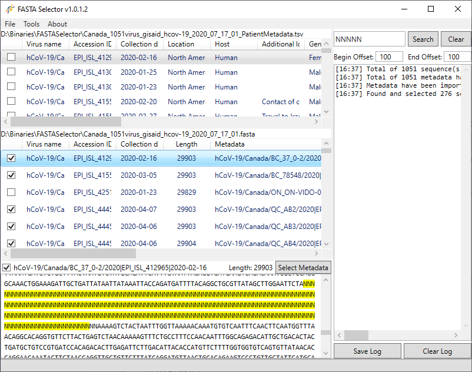

My programming activities
Summary
As a hobbyist programmer, I developed many programs that help me and my family members in general.
But I have never bothered to share or upload them to any website.
Recently, however, one of my sisters strongly wanted me to post one program that I developed for her.
Since then, I am planning to slowly upload some programs that may be useful for others as well.
This page will be slowly filling up with my software and explanation.
FASTA Selector

To simply put, this program is to view sequences (loaded from a FASTA file) and remove selected entries.
If the sequence header consists of some metadata (for example, >ID|NAME|LOCATION), then you can specify them in the option to let the program parse in such way.
Then, when the program reads metadata, it will try to match a sequence to a metadata entry.
This program has been written and tested to meet the requirements specified by my sister.
So, the program may have limited functionalities and features.
The program is written using C# WPF. To run this program, you need .Net Framework 4.5.
Download: Binary v1.0.1.2
Download: Source code
v1.0.1.2: added a feature (automatically select metadata when a sequence is selected).
v1.0.1.1: removed byte order mark (BOM) for UTF-8 encoding.
v1.0.1.0: added features (metadata, redo, and undo).
v1.0.0.0: initial version.